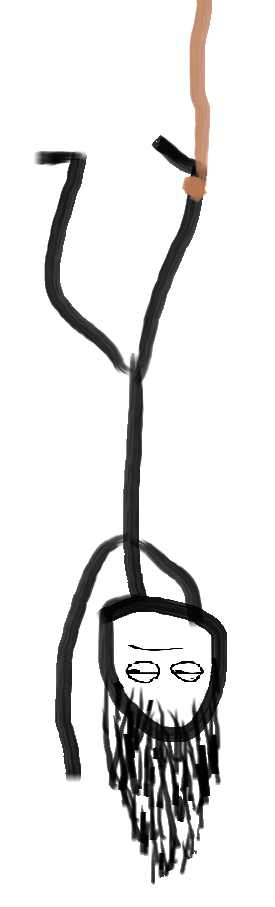

Hi
this is me
And this is the story of how I got here
It all started on a Thursday 30 years ago... But lets skip ahead to a more relevant point.
My name is Raf and I got into computers from a very young age. After a lot of trial and error on old junkers I learned to disassemble computers and put them back together again. It was around this time that I also discovered video games which are still my primary hobby, but more about my hobbies here
Eventually in high school I studied IT management where I learned the basics about programming, building websites, setting up and maintaining a network and many other hardware and software concepts. Afterwards I went to university taking up computer science where I went a lot deeper into the same material. After a long break I'm back to class, following a 2-year developer program. Outside of my studies I like to tinker and learn more about all sorts of tech which made me a jack of all trades, master of none.